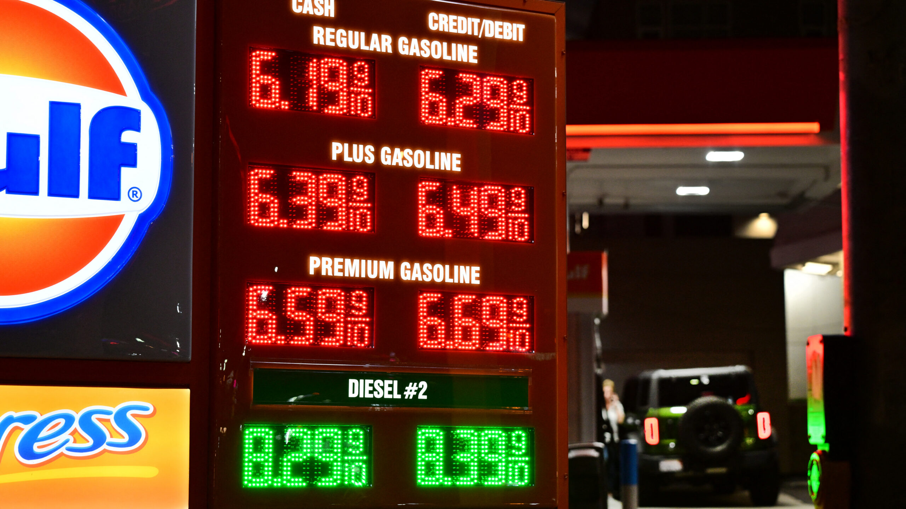

Technology · 11 Nov 2026
High oil prices have led to a dip in global carbon emissions

Bucking recent trends, fossil fuel emissions look to be down 0.4 percent.
Multiple independent publishers are reporting on the same development: High oil prices have led to a dip in global carbon emissions.
The available reports place the development in the Technology category. The accounts were compared for agreement on the central event rather than simply shared names or broad topics.
One of the available reports describes the development this way: Bucking recent trends, fossil fuel emissions look to be down 0.4 percent.
Readers should consult the linked source reports for additional context, updates and details that may change as the story develops.
Sources
This article was produced by the C. O. Eric AI Newsroom from the cited sources. It is published only after automated evidence and safety checks.